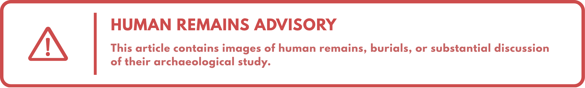
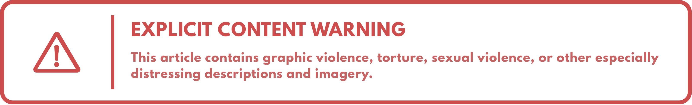
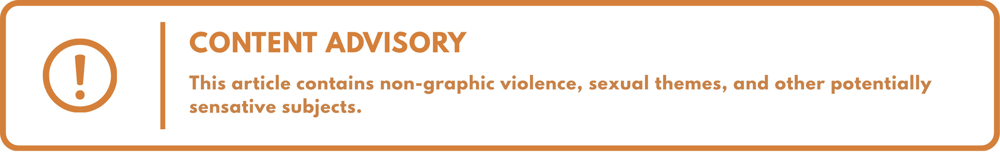

Our Mission
There has never been a better time to be curious about the human past.
From your kitchen table, you can wander through an excavation on the other side of the world, read research as it’s published, zoom in on an object made thousands of years ago, and sometimes even write to the person who dug it up. What once took specialist libraries, academic connections, and plane tickets now takes a search bar and a little curiosity.
But there’s a catch.
The same speed that brings us closer also carries misinformation further. A careful “may suggest” becomes “proves.” A lively scholarly debate becomes a tidy headline. Speculation gets dressed up as fact, and the uncertainty, often the most interesting part, quietly slips away. Even well-meaning coverage can lose the context that gives a discovery its meaning.
Archaeology is especially prone to this, and it’s easy to see why. It deals in lost civilizations, ancient puzzles, human origins, and the lives of people we’ll never meet. These stories don’t need embellishing. They’re already extraordinary.
Mnemosyne exists because we believe archaeology can be entertaining, accessible, and honest all at once, without flattening the past into something simpler than it was.
We want to share the thrill of discovery with as many people as we can, while staying faithful to the evidence. Good storytelling and accuracy aren’t rivals. You don’t have to oversimplify to be understood. And “we don’t know yet” isn’t something to hide. It’s where the real investigation begins.
What's in a Name?
Now, I know what you're wondering. Mnemosyne? How on earth do you even pronounce that?
Mnemosyne (pronounced nih-MOZ-uh-nee) is the ancient Greek goddess of memory and, rather fittingly, the mother of the nine Muses. In Greek mythology, she embodies the power of remembrance, while her daughters preside over poetry, history, music, and the arts. It's a rather appropriate name for a publication devoted to preserving, investigating, and telling the stories of the past.
But the name has a more personal origin, too.
During my studies, I began writing about the subjects I encountered in archaeology, anthropology, and beyond. Initially, these were little more than elaborate study notes, although I quickly discovered that turning something I had learned into an engaging story was one of the best ways to remember it. The more I researched, the more I wrote, and what began as a personal exercise in memory gradually developed into something considerably more ambitious.
I called that little project Mnemosyne, after the goddess of memory. At the time, I certainly wasn't imagining that anyone else would have to figure out how to pronounce it.
The project grew, the writing evolved, and the name, somehow, stuck.
In retrospect, I can hardly imagine a more fitting one. Mnemosyne began as a way for me to remember the things I was learning. Today, its ambition is to share those discoveries, encourage curiosity, and help keep the remarkable stories of our collective past alive.
And, hopefully, make them a little easier to remember.
Curious About Everything
Mnemosyne is an independent publication, and our curiosity doesn’t stay in one place. We follow it across continents, centuries, and disciplines, drawing on archaeology, anthropology, history, art history, and anything else that helps us understand how people have lived.
Sometimes we return to famous discoveries and look at what the evidence really says beneath decades of retelling. Other times we turn to quieter things: a little-known object, an overlooked history, an unanswered question, or new research that hasn’t yet found its audience.
The best stories aren’t always the loudest. A humble object can tell us more about ordinary lives than the grandest monument, and a famous find can become far more fascinating once you see its uncertainties and contradictions.
We’re not here to repeat what’s already been written. We want to dig in, ask questions, add context, and share what we find.
Showing Our Work
You shouldn’t have to take something on trust just because someone sounds sure of themselves.
That’s why we’re open about how we work. Our pieces grow out of careful research, close reading of the scholarly literature, and honest weighing of the evidence behind each interpretation. We credit our sources so you can follow the trail, read the arguments yourself, and disagree with us if you see it differently.
Where we can, we point to open-access scholarship so more people can check our claims for themselves. Plenty of important research sits behind paywalls, and we won’t ignore it for that reason, but we’d rather you could verify what we say than simply believe us.
We also think the people doing the work deserve a place in the conversation. Through interviews and correspondence, we try to bring you closer to the researchers behind the discoveries: what they’re asking, how they’re finding out, where they disagree, and what still can’t be known. These conversations don’t replace independent research or healthy skepticism. They’re one part of a bigger picture, alongside published evidence and competing interpretations.
How We Tell the Story
Every piece we publish tries to balance two things: being responsible and being a pleasure to read.
On the responsible side, we separate evidence from interpretation, say plainly when something is uncertain, give competing explanations a fair hearing, and never present an open question as a closed case. We weigh each source, whether a primary document, a journal article, or a conversation with a specialist, by how reliable it is and what it actually adds.
But rigor is only half the job. The other half is making it worth your time.
Archaeology deserves writing that’s vivid, imaginative, and alive with the excitement of finding something. A good narrative can make a hard idea click, take you somewhere unfamiliar, and show why an object that seems distant still matters. The trick is doing that without stretching what the evidence says, making up details to fill its silences, or smoothing away the complications that make the past so interesting.
We won’t always land on a neat answer, and that’s fine. Some of the best investigations leave us with better questions instead of comfortable conclusions.
Always Learning
Mnemosyne isn’t the last word on anything we cover.
Knowledge grows through investigation, disagreement, and revision. A new discovery can overturn an old assumption, and thoughtful criticism can show where a convincing argument falls short. We see that as one of scholarship’s greatest strengths, not an inconvenience.
So we welcome corrections, suggestions, and collaboration from researchers, institutions, and readers alike. If something we’ve written can be better, we want to make it better. If the evidence points somewhere new, we’re happy to follow.
We have a remarkable amount of the past within reach. It’s an invitation to do more than scroll: to ask questions, push back on the stories we’re told, and explore together.
The past is already extraordinary. We just want to tell its stories truthfully.
Ethics
The study of the human past carries responsibilities that extend far beyond the accuracy of the stories we tell.
Archaeology concerns real people, their lives, their beliefs, their possessions, and their dead. Its discoveries may illuminate distant histories, challenge established interpretations, or contribute to the identities and cultural traditions of communities living today. The privilege of investigating and communicating these discoveries demands care, humility, and respect.
At Mnemosyne, we believe that responsible archaeological storytelling begins with a commitment to truth, but cannot end there. It must also consider how knowledge is obtained, how evidence is represented, whose perspectives are included, and what consequences may follow from the publication of sensitive material.
The following principles guide our editorial decisions and the responsibilities we accept toward our readers, researchers, and the communities whose histories we explore.
Editorial Integrity and Accountability
Our first responsibility is to present the past as truthfully as the available evidence allows.
Every Mnemosyne publication is guided by a structured editorial process emphasizing research, source evaluation, factual verification, and critical review. We strive to distinguish established evidence from scholarly interpretation, acknowledge meaningful disagreements, and communicate uncertainty wherever the available information does not justify a definitive conclusion.
We do not knowingly alter, exaggerate, invent, or suppress evidence to strengthen a narrative. Where an interpretation is disputed, we seek to represent the disagreement fairly, without implying that all competing explanations necessarily possess equal evidentiary support.
Our editorial standards are demanding, but they are not a guarantee of infallibility.
We make mistakes. We may misunderstand a source, overlook relevant scholarship, misinterpret an argument, or reach a conclusion that later evidence calls into question.
No amount of editorial scrutiny can eliminate that possibility. What matters is our willingness to recognize mistakes, acknowledge them openly, and correct them responsibly.
We welcome corrections, constructive criticism, and scholarly disagreement from readers, researchers, and institutions. If you encounter a factual error, misleading interpretation, missing reference, or any other concern about our work, we encourage you to contact us. Substantive corrections will be made transparently, with appropriate acknowledgment where warranted.
We regard informed criticism not as an attack upon our work, but as an opportunity to make it better.
Sources, Attribution, and Transparency
Our readers should be able to understand where our information comes from.
Mnemosyne aims to provide clear references for the evidence, interpretations, quotations, and research informing its publications. Wherever practical, we prioritize open-access scholarship to allow readers to consult the original material, evaluate its context, and independently examine the claims we make.
Our commitment to attribution extends beyond written research.
Photographs, illustrations, maps, diagrams, archival materials, and other media are credited to their respective creators, institutions, or sources, as appropriate. We seek to identify relevant authorship, provenance, permissions, and licensing conditions, and to distinguish historical material from modern reconstructions or interpretive illustrations.
We recognize that publicly accessible material is not necessarily free to reproduce, and that permission to reproduce an image does not automatically establish that its publication is ethically appropriate.
If you believe that an image, document, quotation, or other resource has been incorrectly attributed, inadequately referenced, reproduced without appropriate authorization, or otherwise used inappropriately, please contact us. We take such concerns seriously and will review them, making corrections or removing material where necessary.
Transparency is not merely a courtesy to our readers. It is a fundamental part of responsible scholarship.
Human Remains, Burial Goods, and Sensitive Material
Archaeology frequently brings us face to face with some of the most intimate and sensitive aspects of human existence.
Human remains, graves, funerary objects, sacred materials, and other culturally significant discoveries can provide invaluable insights into past societies. They may reveal information about health, mortality, religious beliefs, social relationships, and the ways in which people understood life and death.
Yet their scientific or historical significance does not diminish the dignity of the individuals to whom they belonged, nor the importance they may continue to hold for living communities.
At Mnemosyne, human remains are never presented merely for shock value, spectacle, or morbid curiosity.
Before publishing such images, we endeavor to consider their educational relevance, cultural context, provenance, and the wishes or concerns of descendant and affiliated communities. We ask whether displaying an image meaningfully contributes to understanding the subject, whether an alternative might communicate the same information with greater sensitivity, and whether its publication could cause unnecessary distress or disrespect.
These considerations extend to burial goods, sacred objects, funerary settings, and other materials whose significance cannot be reduced to their archaeological interest alone.
We recognize that different communities hold different understandings of death, ancestry, burial, and the appropriate treatment of the deceased. What may be considered acceptable in one cultural or institutional context may be deeply inappropriate in another. We therefore seek to approach these questions with sensitivity to the people and traditions concerned, rather than assuming that academic or educational interest automatically justifies publication.
Where appropriate, this may mean consulting relevant communities or specialists, limiting the visibility of particular images, selecting alternative illustrations, or choosing not to publish certain material at all.
We also recognize that our own judgments may be imperfect. If you believe that a photograph, illustration, or other representation published by Mnemosyne is culturally insensitive, unnecessarily explicit, or otherwise inappropriate, we sincerely encourage you to contact us.
We will consider such concerns seriously and reconsider the material where warranted.
Cultural Heritage, Legal Responsibilities, and Professional Standards
The right to study the past does not imply an unrestricted right to possess, reproduce, interpret, or display everything it contains.
Archaeological research takes place within a complex landscape of national laws, international agreements, professional responsibilities, and the rights and interests of communities connected to cultural heritage.
Mnemosyne is committed to respecting applicable laws governing archaeological materials, cultural property, intellectual property, and the treatment of human remains. These include, where relevant, the United States' Native American Graves Protection and Repatriation Act (NAGPRA), which provides protections and procedures concerning Native American human remains, funerary objects, sacred objects, and objects of cultural patrimony.
We also look to established professional guidance, including the ethical principles of the Society for American Archaeology, the International Council of Museums, and other relevant archaeological, heritage, and museum organizations around the world.
Legal compliance, however, represents only part of our responsibility.
We recognize the importance of cultural stewardship, consultation, repatriation, and the rights and perspectives of descendant and Indigenous communities. We do not regard archaeological objects as existing in isolation from the people, histories, and traditions to which they belong.
We will endeavor to treat questions of ownership, provenance, cultural affiliation, and contested heritage with the seriousness they deserve, and to avoid presenting the acquisition or possession of archaeological material as inherently legitimate simply because it has entered a museum or private collection.
Our aim is not to speak on behalf of the communities whose histories we explore, but to recognize their perspectives and engage with them respectfully wherever possible.
Reader Discretion and Content Advisories
The human past is not always comfortable.
Archaeological and historical investigations may involve death, violence, persecution, exploitation, sexual practices, and other subjects that readers may find sensitive or distressing. To exclude such topics entirely would be to offer an incomplete account of human history. To present them carelessly would be equally irresponsible.
We believe that readers deserve the opportunity to make informed choices about the material they encounter.
For this reason, Mnemosyne uses content advisories at the beginning of publications containing potentially sensitive material. These notices are intended to communicate the nature of the content without sensationalizing it or passing judgment on the reader's decision to engage with it.
Human Remains Advisory

This label appears at the beginning of publications containing images of human remains or substantial discussion of human bodies, burials, or their archaeological investigation. It provides advance notice that such material may be encountered.
Explicit Content Warning

This label identifies publications containing graphic depictions or detailed descriptions of extreme violence, torture, sexual violence, or similarly distressing material. Such content is included only where we consider it relevant to understanding the subject and is not presented for gratuitous effect.
Content Advisory

This label identifies publications containing potentially sensitive subjects, including non-graphic violence, sexual themes, and other material for which readers may appreciate advance notice.
These advisories may appear together when a publication addresses more than one category of sensitive material. Their inclusion does not diminish the importance of the subject, nor does it suggest that the material is inherently inappropriate for study. They are intended to provide information, promote considerate presentation, and respect the differing circumstances and sensitivities of our readers.
We recognize that no advisory system can anticipate every concern or accommodate every reader's needs. We therefore welcome feedback about the suitability, clarity, and application of these notices.
An Ongoing Responsibility
Ethical standards are not fixed simply because they have been written down.
Our understanding of responsible archaeological practice continues to develop through new research, changing professional standards, dialogue with communities, and the reconsideration of decisions made in the past.
Mnemosyne's ethical commitments must remain open to the same scrutiny that we apply to the subjects of our investigations.
We will not always get everything right. But we are committed to approaching our work with intellectual honesty, transparency, respect, and a genuine willingness to listen.
Our responsibility is not only to tell the truth as best we understand it, but to remain willing to change our understanding when the evidence, or those affected by our work, gives us reason to do so.